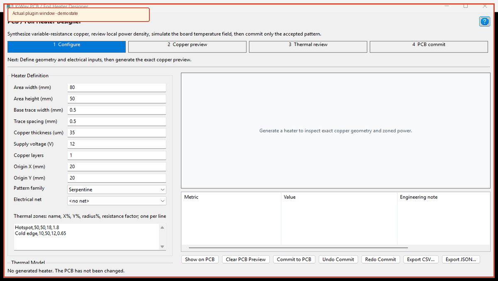

name,X%,Y%,radius%,resistance factor. A factor above 1 narrows copper and raises local series resistance; below 1 widens it.Serpentine and zoned raster maximize area coverage. Concentric spiral supports centrally biased structures. Multilayer mode creates a continuous series path and transition-via list.
The solver distributes calculated trace loss into a board-plane grid and iterates lateral conduction plus uniform two-sided convection. It includes copper temperature coefficient in the report, but does not solve enclosure airflow, radiation, anisotropic laminate, adhesive interfaces, attached masses, or closed-loop control dynamics.
If no PCB geometry appears, generate first, choose a valid origin, then click Show on PCB. Clear the temporary preview before changing geometry. Run KiCad DRC after commit.